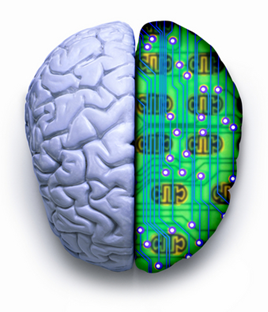

Despite their probable amount of similarities, the brain is a fundamentally different processing system than the computer. The human brain is a process driven system that is able to operate on multiple levels at once. These characteristics make the human brain an unpredictable system. In contrast, computer systems are input driven, single processing machines. Thus, a computer’s current state + given input = next state. The computer, unlike the human brain, is a predictable machine. Thus, in order for Learning Systems to be effective, they must be designed to align with the processing laws of the human brain. In this tutorial you will learn how to:
Engage and manage your users interest through interactive design schemes
Site Design
Design effective and interactive 3D simulations to teach motor skills